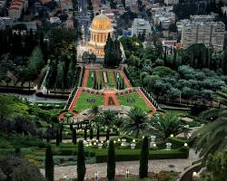
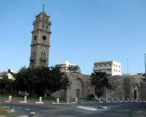
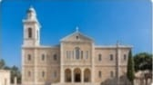
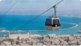
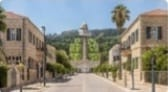
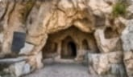
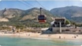
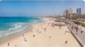

حيفا.. لؤلؤة الكرمل وعروس البحر
"رحلة مصورة شاملة عبر تاريخ وثقافة ومعالم حيفا، من مينائها الحيوي إلى قمم الكرمل الشاهقة ومن الأحياء القديمة."

حدائق البهائيين (جنة الكرمل)
أعجوبة معمارية وحدائق غناء متدرجة مدرجة على قائمة التراث العالمي.
ميناء حيفا الدولي (بوابة الشرق)
أهم ميناء تجاري وبوابة بحرية رئيسية يربط الشرق بالغرب.

جامع الجرينة وبرج الساعة
جامع تاريخي بقلب المدينة القديمة، معلم ديني وثقافي بارز.

دير ستيلا ماريس (عراقة تاريخية)
مبنى تاريخي مطل على البحر، يجسد تاريخ الكرمل وحيفا.
معالم حيفا: حكاية إبداع وإرث
"هنا تلتقي الحداثة بالتاريخ في لوحة واحدة؛ صروح أكاديمية رائدة وتلفريك يربط الجبل بالبحر، جنباً إلى جنب مع أحياء ومزارات دينية عريقة تروي فصولاً من حكايات عروس الكرمل."

تلفريك حيفا (إطلالة بانورامية)
يربط الشاطئ بقمة جبل الكرمل، يوفر مناظر خلابة للمدينة.

المستعمرة الألمانية (عبق التاريخ)
أحد أقدم الأحياء، يتميز بعمارته الأوروبية ومقاهيه الحيوية.

مغارة إلياس (قدسية الكرمل)
موقع ديني مقدس للمسيحيين واليهود، يرتبط بالنبي إلياس.
معهد التخنيون (فخر البحث العلمي)
رائد في التعليم والبحث التكنولوجي على مستوى العالم.
حيفا النابضة: سحر الساحل وروح المجتمع
" نأخذكم في جولة على امتداد الشواطئ الذهبية لعروس الكرمل؛ حيث تلتقي زرقة البحر العميقة بحكايات أهلها الطيبين في نموذج فريد للتعايش والأصالة، وحركة أسواقها النابضة بالحياة"

شاطئ بات غاليم
إطلالة ساحلية فريدة تلتقي فيها أمواج البحر الهادئة بسفوح جبل الكرمل الشامخ، لتقدم لوحة طبيعية آسرة وعشاق الاستجمام والرياضات المائية.

كورنيش شاطئ حيفا
امتدادٌ ساحر على طول الساحل الخلاب، يعد متنفساً حيوياً ومثالياً للأهالي والزوار للاستمتاع بالمشي، وتأمل غروب الشمس الساحر وسط أجواء تملؤها الحيوية والبهجة.

أهل حيفا (قدوة التعايش والتنوع)
في حيفا تعيش العائلات من خلفيات مختلفة معاً بسلام. نحن نفخر بهذا النموذج من الاحترام المتبادل والتنوع الثقافي.

أسواق لا تنام
شرايين حيوية تجمع بين عبق التاريخ وحداثة الحاضر؛ تمتاز أسواق حيفا القديمة والشعبية بحركتها المستمرة، وتنوع معروضاتها التي تعكس روح المدينة الاقتصادية والثقافية.